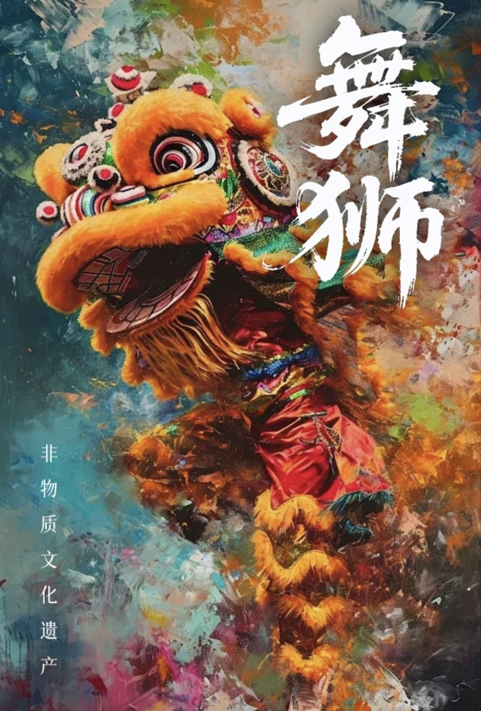
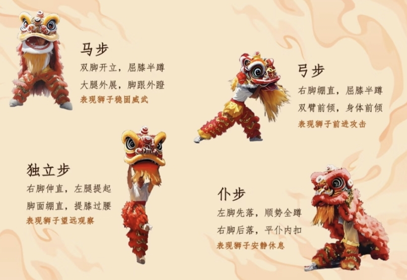
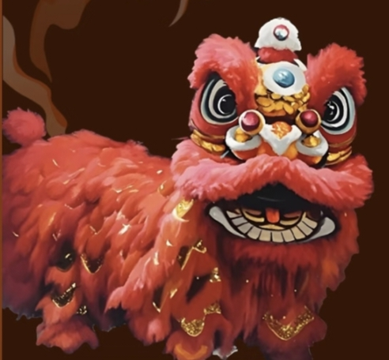
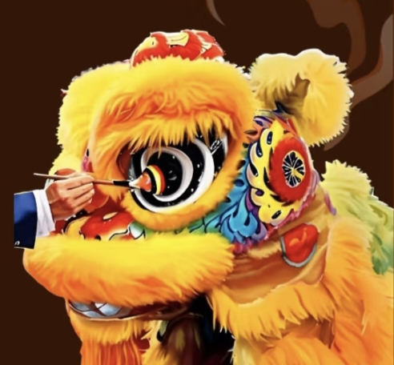
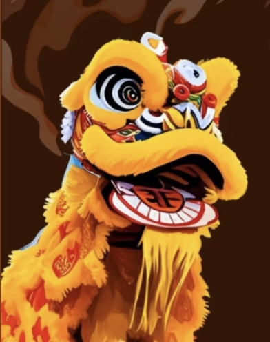

| 表演艺术 |
舞狮表演精神 团结合作 |
 |
| 舞狮基础步伐 |
|  |
|  |  |  | ||||||
出狮
出狮又名出山，是指狮子出门寻找食物，通常以狮头“拜神三下”作为示意，也是舞狮表演中的常见开场表演。 |
点睛
在舞狮开始前，由嘉宾或重要人物用毛笔蘸朱砂点在狮眼上，象征赋予狮子生命，眼睛也被视为心灵的窗户，通过点睛赋予狮子“灵魂”。 |
采青
舞狮通过一系列动作猎取悬挂于高处的“利是”，“利是”往往伴以青菜，故名“采青”，寓意着祈求丰收和吉祥。采青中的“青”通常用生菜，有“生财”的意思，还会搭配芹菜（寓意“勤勤恳恳”）等，放上红包，取其“利利是是”之意，也是舞狮者的酬金。 |